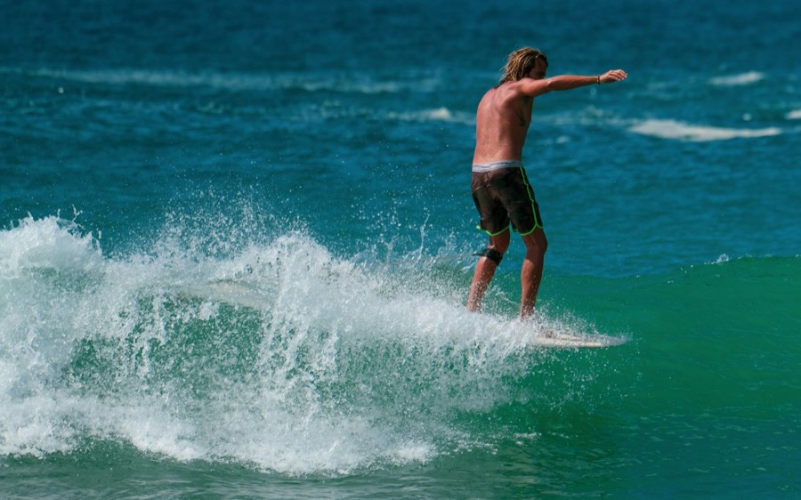
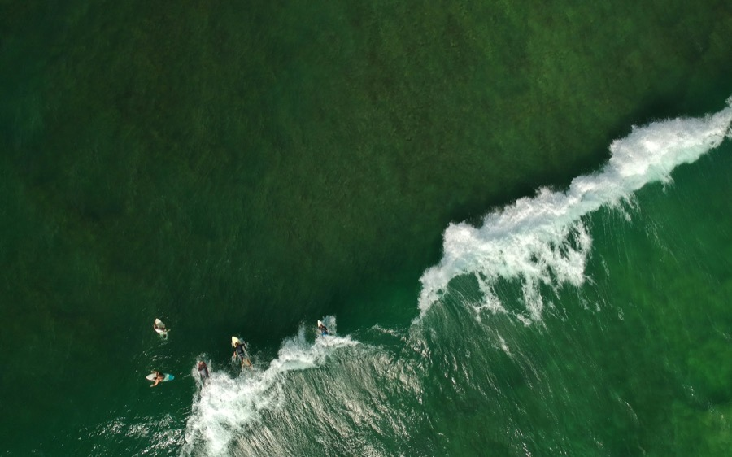
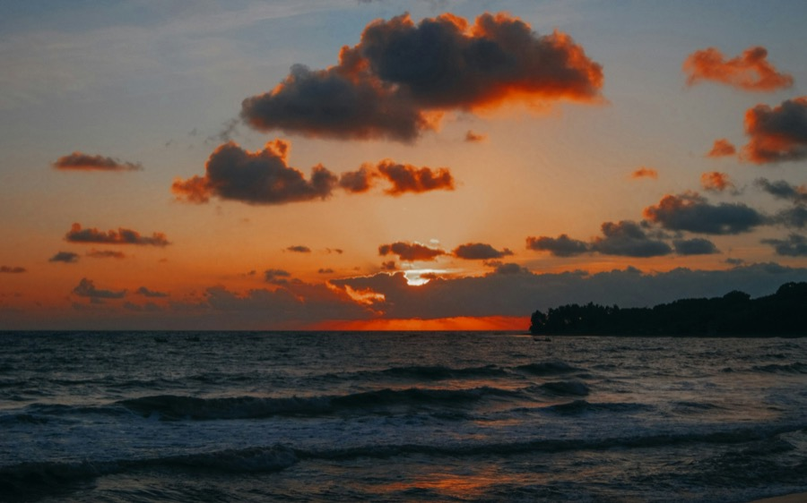
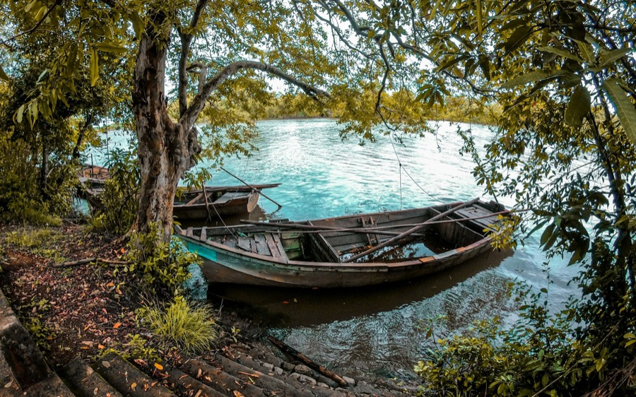
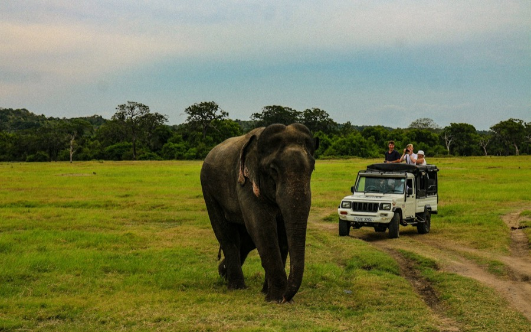
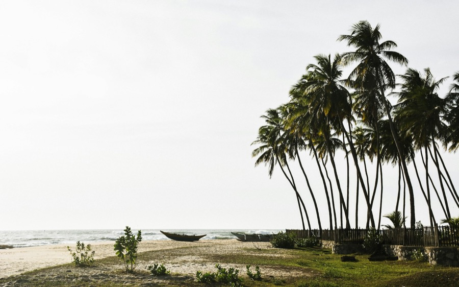

1
Main Point & Baby Point
The reason people come: a long right-hand point break right in town, with rides of 50–150 m and 400 m or more on the best days, at its best on a south-easterly swell. Baby Point is its inside section — soft, slow waves where the surf schools take first-timers. Not surfing? Watch from the sand at dawn.
From townIn town
OpenApr–Sep · best at dawn
Give it2 hours a session
EffortBaby: beginner · Main: intermediate–advanced
TicketFree · lessons ≈ USD 20–40
From our driversFirst time? Stay on Baby Point and leave Main to the confident surfers — it breaks over a reef shelf and it’s crowded, especially June to August. Paddle out at dawn, before the wind gets up.

2
Whiskey Point
A right-hander 10–15 minutes north of town towards Pottuvil, and the most consistent wave in the area: punchy but forgiving, with rides of 100–200 m. The step up once you can catch a wave and turn — and a quieter stretch of beach to stay on.
From town10–15 min north by tuk-tuk
OpenApr–Sep · mornings
Give itA morning
EffortIntermediate
TicketFree
Good to knowRocks and boulders on the inside — reef booties help. Friday night is party night at Sababa here, so it’s less quiet at the end of the week.

3
Elephant Rock & Peanut Farm
South of town off the Panama road, two gentler waves: Peanut Farm, about 20 minutes away at the end of a long beach (stick to the inside peak — the outside is steep and rocky), and Elephant Rock, a fat, soft wave that loves longboards. Elephant Rock is also the bay’s sunset spot, a short walk from the road.
From town15–20 min south by tuk-tuk, then a short walk
OpenMornings to surf · back for sunset
Give itA morning, or an hour at sunset
EffortBeginner–lower intermediate
TicketFree
Good to knowCrocodiles live in the lagoon behind Elephant Rock, and someone was killed there in 2017. Surf and swim on the sea side only, and keep away from the lagoon edge. Wild elephants are reported around Peanut Farm too.

4
Pottuvil Lagoon mangrove safari
A slow trip by boat or canoe through the mangrove channels of the lagoon at Pottuvil, looking for crocodiles, water birds and, sometimes, elephants at the water’s edge. The calmest two hours you’ll spend here.
From townPottuvil · about 10 min
OpenDawn or late afternoon
Give it2–3 hours
EffortEasy
Ticket≈ USD 23–35 per adult, by operator
From our driversGo early or late — the wildlife is most active then, and the middle of the day is too hot. Any of the tour desks on the main road can book it the day before.

5
Kumana National Park
The eastern side of Yala, entered at Okanda down the Panama road: lagoons, scrub jungle and the Kumana Villu wetland. You may see elephants, crocodiles and, sometimes, a leopard, but it’s the birds people come for — the migrants peak from April to July.
From townOkanda gate · 1 h+ down the Panama road
Open6 AM–6 PM · by jeep
Give itHalf a day
EffortEasy · by jeep
Ticketabout USD 25–27 plus charges and VAT (2026) — check at the gate
Good to knowBring cash — there’s no online entry ticket, and cards at the gate aren’t certain. Hire a jeep in the bay (about Rs 7,000–10,000 for a half day) or book a tour that bundles jeep and tickets. The park can close after heavy rain, as it did in late 2025.

7
Muhudu Maha Viharaya
An ancient temple on the dunes of Pottuvil beach, over 2,000 years old and tied to the legend of the princess Viharamaha Devi, who is said to have washed ashore here. Half an hour, with the sea right behind the ruins.
From townPottuvil · about 10 min
OpenEarly morning or late afternoon
Give it30 min
EffortEasy
Good to knowIt’s a working temple: cover shoulders and knees, take off shoes and hats, and never pose for a photo with your back to a Buddha statue.